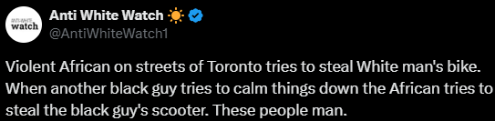
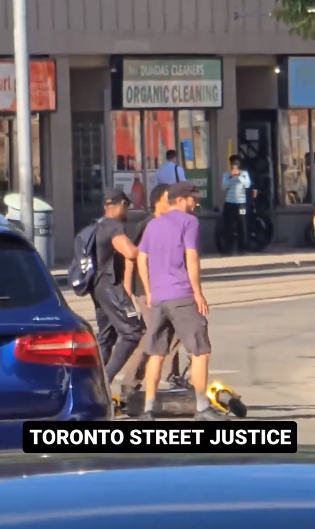
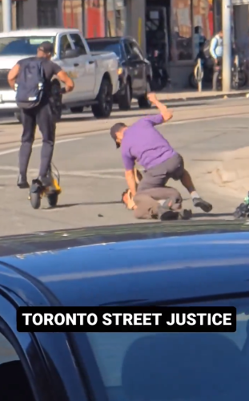
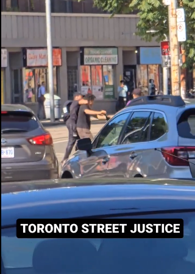
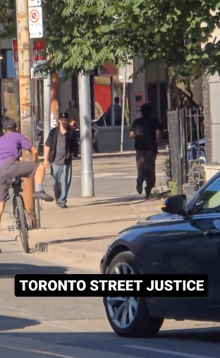
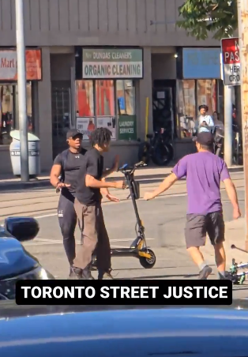

最近，一位网友在网上发布了一段名为“多伦多街头正义”的视频，把大家都给乐坏了。

这位网友写道：“一位在多伦多街头的暴力的非洲人试图偷白人的自行车，另一个黑人见义勇为，试图平息事态，谁知道这个非洲人又试图偷走见义勇为者的踏板车…”

从视频中可以看到，一名黑人和一位白人小哥扭打在一起，似乎是因为这位黑人企图偷走白人小哥的自行车，白人小哥也不是吃素的，直接把黑人男子压在马路上一顿毒打。
就在这时，一位骑着踏板车的黑人男子路过，估计是想让他们别打了，这年头还上哪去找这种好心人啊！

就在这位小哥好心劝架的时候，黑人男子趁他不注意，直接骑上他的小踏板车，打算一走了之。
这下这位好心的黑人小哥也被激怒了，心里估计在想：
“我好心好意帮你，你还要偷我的车？”

于是乎，他直接一个锁喉，把偷车的黑人男子从自己车上拉了下来，不过这位小哥也没太计较，就让小偷赶紧走吧，别在这碍眼。
白人男子见状，也打算离开了，之后这位偷车贼才灰溜溜地离开…

讲真的，这位偷车贼可真是执着，不带点东西回去还就是不死心。
吃瓜的网友们也是看得津津有味：“所以说，对待非洲人也不能一棍子打死，视频里的两个人就是最好的例子…”

还有网友表示：“为什么说人善被人欺，这就是最好的解释。”
“那个偷车贼肯定是惯犯了，就是该打，毕竟他刚被打完就又去犯案了…”
https://x.com/Vinighamismo/status/1819335456628064377
https://www.reddit.com/r/PublicFreakout/comments/1eigqie/meanwhile_in_the_streets_of_toronto_he_tries_to/